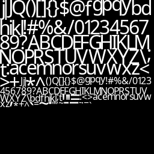

Screenshots
Baum
Counter Strike maps:


Interface:
Farbiges Licht:
Schatten (Shadow Volume):
Automatisch Generierte Textur für das rendern von Text:
Alle Sprachen/Zeichen sind möglich (Unicode):
Schatten
Ich habe eigene (komprimierte) Dateiformate für 3D Modelle, Texturen und Audio- Dateien erstellt, um das Laden zu vereinfachen und zu verschnellern, da sie zusätzliche (vorberechnete) Informationen enthalten. Zum Beispiel eine Liste mit mit allen Kanten eines Modells, was die Erstellung der Schatten vereinfacht. Sonst müssten bei jedem Start die Kanten neu gefunden werden. Das bedeutet, dass jede der drei Seiten eines Dreiecks mit den Seiten aller anderen Dreiecke verglichen werden müssen, um zu bestimmen, welche Dreiecke eine Seite teilen.
Anti aliasing
(FXAA und MSAA) sind Methoden die die Kanten glätten damit man die Pixel nicht sieht. Mit MSAA werden die Pixel, die sich an den Kanten befinden an 2/4/8/16 Punkten innerhalb des Pixels die Farben berechnet und daraus der Mittelwert gebildet. Mit FXAA wird das Bild normal gerendert und danach mit einem Shader an bestimmten Stellen leicht unscharf gemacht. MSAA sieht besser aus und macht die Grafikkarte automatisch, kostet aber FPS. Das Problem mit FXAA ist, dass es die Texturen teilweise unscharf macht.
kein Antialiasing:
4x MSAA:

FXAA:
Kollisionserkennung
Zu jedem 3D-Objekt wird ein Quader erstellt, der das Objekt vollständig einschließt. Der Quader ist ist nach den Achsen des Koordinatensystems ausgerichtet (nicht gedreht). Siehe Axis-aligned bounding boxes bei MDN
Hinweis: Die Y-Achse ist die Hochachse
Kollisionen werden auf der X, Y und Z Achse getrennt geprüft, damit der Spieler sich z.B. auf der X Achse weiterbewegen kann, wenn die Bewegung auf der Z Achse gesperrt ist und damit man weiß wenn der Spieler den Boden berührt (Kollision auf Y-Achse + Negative Geschwindigkeit auf der Y-Achse) Dadurch kann dann eine Variable zurückgesetzt werden sodass man wieder springen kann.Wenn das Objekt bewegt, rotiert oder in der Größe verändert wird muss natürlich auch der Quader (AABB) entsprechend angepasst werden.
Es funktioniert gut außer wenn etwas sich in den Spieler hineinbewegt, denn dann hängt man darin fest bis es sich von selbst hinausbewegt hat. Das liegt daran, dass ich bei einer Kollision einfach die Position des Spielers auf die vorherige Position zurücksetzte.
Vielleicht könnte man ein Octree benutzen wenn es sehr viele Objekte werden sollten.
Audio/Sound
Ich habe mit den Sound-Code experimentiert. OpenAL, die Bibliothek mit
der ich das mache, unterstützt 3D Audio, das heißt man kann Geräuschquellen
im Raum positionieren und ausrichten, sodass man es dann mit Kopfhörern so hört,
als würde das Geräusch wirklich von dem Ort aus kommen. Also wenn man weiter weg ist
dann wird das Geräusch leiser und wenn man links davon steht hört man es auf dem
rechten Ohr lauter als auf dem Linken und umgekehrt. Die Audiodaten müssen im richtigen
Format vorliegen (oder man muss sie umwandeln). Wenn sie das nicht sind, bekommt
man keinen Fehler, es funktioniert dann aber nicht nicht (kein Ton).
Es gibt ein leises Rauschen, ich glaube das liegt an meinem Laptop und
nicht an einem Programmierfehler.
Andere
Ich habe eine Konfigurationsdatei erstellt (und dazugehörigen Parser) die die Einstellungen speichert (z.B. Grafikeinstellungen). Die Wertepaare aus der Datei liegen in einer Hashtabelle.
Ich habe einen Shader-Packer geschrieben (den Namen habe ich mir selbst ausgedacht). Shader sind kleine Programme, die auf der Grafikkarte laufen und in der C-ähnlichen Programmiersprache GLSL geschrieben werden. Es gibt mehrere verschiedene Arten von Shadern, einmal den Vertex-Shader, der alle Ecken verarbeitet, den Fragment-Shader (der auch Pixel-Shader genannt wird), der für jedes Pixel aufgerufen wird. Dann gibt es noch Geometry-, Compute- usw. Shader die andere Funktionen erfüllen. Shader müssen beim Programmstart immer neu kompiliert werden, damit dass Programm mit verschiedenen Grafikkartenmodellen und Treibern funktioniert. Davor waren alle Shader jeweils in 21 einzelnen Dateien gespeichert. Deshalb habe ich eine Anwendung programmiert, die alle diese Dateien nimmt und in eine einzelne Datei überträgt und überflüssige Leerzeichen, Kommentare usw. entfernt. (Damit die Datei möglichst klein wird). Anschließend wird daraus ein string erstellt und direkt in die .EXE eingefügt.
Ich habe ein paar Sachen mit dem Debugging-Programm RenderDoc ausprobiert, irgendwie funktioniert es nicht richtig/zeigt Fehler an die nicht existieren. 16.06.2020: Ich habe inzwischen herausgefunden, wie man renderdoc benutzt und es hilft sehr in den Fällen wo nichts auf dem Bildschirm erscheint, weil man damit alle Texturen/Buffer usw. betrachten kann und so überprüfen kann dass alles korrekt geladen hat. Man kann damit auch Shader debuggen, aber das geht leider nur mit DirectX.
Ich habe einige Sachen über Makefiles gelernt. Die Anweisungen join, addprefix, addsuffix, dir und notdir waren besonders nützlich.
Ich habe eine Screenshot-Funktion implementiert.